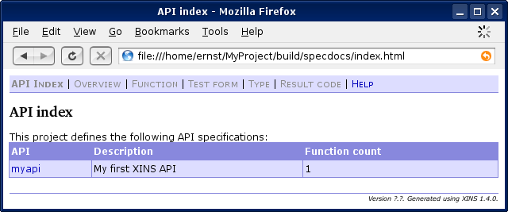

Introduction
This article takes you by the hand and lets you create your first XINS application. Consider it your 'Hello World' exercise for XINS.
The exercise should take you about 15 minutes.
Prerequisites
In order to finish this tutorial successfully, you are expected to:
- have XINS installed (see the installation guide);
- have some knowledge regarding the syntax of Java
Overview of contents
This article is divided in the following short sections:
- 1. Write definitions (4 steps)
- 2. Generate code and docs (2 steps)
- 3. Browse some generated documentation (5 steps)
- 4. Run the empty web application (5 steps)
- 5. Write implementation code (3 steps)
- 6. Finally
1. Write definitions
In XINS, an application (called API in XINS terminology) is always part of one project. Every function is again part of one API.
Let's define a project, containing one API, containing one function.
| Step 1. | Create a directory named MyProject in a directory of your choice. This directory will contain all files for the project. |
||||||||||||||
| Step 2. | In this directory, create a file named xins-project.xml, with the following content:
<?xml version="1.0"?> <!DOCTYPE project PUBLIC "-//XINS//DTD XINS Project 1.4//EN" "http://www.xins.org/dtd/xins-project_1_4.dtd"> <project name="MyProject" domain="com.mycompany"> </project> Note: Make sure you indeed have the |
||||||||||||||
| Step 3. | Open a command prompt (on Windows) or a terminal window (on other systems).
In the
Since an API should contain at least one function, you are also requested to provide the name and description of a first function. Now have a look at your
Additionally, the contents of the Note: Study the generated definition files to get a better understanding of them. |
||||||||||||||
| Step 4. | Edit the file apis/myapi/spec/SayHello.fnc. Replace the file contents with the following:
<?xml version="1.0"?>
<!DOCTYPE function PUBLIC
"-//XINS//DTD Function 1.4//EN"
"http://www.xins.org/dtd/function_1_4.dtd">
<function name="SayHello">
<description>Greets the caller</description>
<input>
<param name="name" required="true">
<description>Name of the person to greet</description>
</param>
</input>
<output>
<param name="greeting" required="true">
<description>Actual greeting for the caller.</description>
</param>
</output>
</function>
name" and an output parameter "greeting". Both are marked as mandatory. |
2. Generate code and docs
You now have your definitions ready. That was not so hard. But you may wonder what you can do with it. Actually, quite a lot already! From this definitions you can make XINS generate:
- HTML documentation with test forms;
- ODF documentation for use in OpenOffice.org;
- server-side code, with Javadoc documentation;
- client-side code, with Javadoc documentation;
- an empty-shell web application in the form of a WAR file;
- etc.
Let's generate all of the above mentioned:
| Step 5. | From the MyProject directory, first run the command xins help to get a list of available XINS commands. You should see something like this:
[echo] Generic targets: [echo] - version Prints the version of XINS. [echo] - help Prints this message. [echo] - all Generates everything. [echo] - clean Removes all generated files. [echo] - specdocs Generates all specification docs. [echo] - wars Generates all WAR files. [echo] - capis Generates all CAPI JAR files. [echo] - javadoc-capis Generates all CAPI Javadoc. [echo] [echo] The following commands assist in authoring specifications: [echo] - create-api Generates a new api specification file. [echo] - create-function Generates a new function specification file. [echo] - create-rcd Generates a new error code specification [echo] file. [echo] - create-type Generates a new type specification file. [echo] - create-example Generates a new example for a function. [echo] - create-logdoc Generates the basic logdoc files for an API. [echo] [echo] The following targets are specific for a single API, [echo] replace <api> with the name of an existing API: [echo] - run-<api> Runs the WAR file for the API. [echo] - war-<api> Creates the WAR file for the API. [echo] - specdocs-<api> Generates all specification docs for the API. [echo] - javadoc-api-<api> Generates Javadoc for the server API [echo] implementation. [echo] - server-<api> Generates the WAR file, the API Javadoc for [echo] the server side and the specdocs for the API. [echo] - jar-<api> Generates and compiles the CAPI classes. [echo] - javadoc-capi-<api> Generates the Javadoc for the CAPI classes. [echo] - client-<api> Generates the CAPI JAR file and the [echo] corresponding Javadoc. [echo] - clean-<api> Cleans everything for the API. [echo] - rebuild-<api> Regenerates everything for the API. [echo] - all-<api> Generates everything for the API. [echo] - wsdl-<api> Generates the WSDL for the API. [echo] - stub-<api> Generates the stub for the API. [echo] - test-<api> Generates (if needed) and runs the tests. [echo] - opendoc-<api> Generates the specifications in Opendoc format for the API. [echo] [echo] APIs in this project are: [echo] "myapi" |
| Step 6. | From the same directory, now run "xins all" to generate everything for all our APIs, under the build directory.
Since we have only one API, this is effectively the same as executing " |
3. Browse some generated documentation
| Step 7. | Now, with a web browser, check out the build/specdocs/index.html file to see the generated HTML documentation. You are first presented with an overview of all APIs:
 |
| Step 8. | Click on the myapi link to view the specification overview for your API: |
| Step 9. | Click on the SayHello link to see the specifications for the function: |
| Step 10. | Click on the link labeled Test Form (on the top) to view a page that allows you to test your API using your browser. |
| Step 11. | Open the build/javadoc-api/myapi/index.html file in your browser to see the Javadoc documentation for the server-side code:
Note: Only the Note: Client-side code is also generated, but that is left outside the scope of this tutorial. If you are interested, then you can open |
4. Run the empty web application
You've seen enough documentation. Let's see if we can run the XINS API implementation already. Remember that we have generated an empty-shell web application.
In order to run this empty-shell implementation, the only thing you still need is a so-called runtime properties file. This file defines how the API should behave at runtime. If you change this file while the application runs, the changes will be picked up automatically.
| Step 12. | In your MyProject directory, create a new file named xins.properties, with the following in it:
org.xins.server.config.reload=10
org.xins.server.acl=allow 0.0.0.0/0 *
log4j.rootLogger=INFO, console
log4j.appender.console=org.apache.log4j.ConsoleAppender
log4j.appender.console.layout=org.apache.log4j.PatternLayout
log4j.appender.console.layout.ConversionPattern=%-4c{1} %p %m%n
log4j.logger.org.xins.server.runtime.tx.3540=OFFThe second one allows all IP addresses to invoke any function in the API. The next 4 lines configure the logging subsystem so it prints log messages to the console. The last line disables duplicate transaction logs, only logging the long form. |
| Step 13. | From the MyProject directory, run the command:
xins -Dorg.xins.server.config=xins.properties run-myapi org.xins.server.config property indicates which file contains the properties to use at runtime.
After starting, you should see some log messages: Note: Observe that each log message has a unique number, for easy parsing. Refer to the Logdoc documentation to see which log messages are available and what their numbers are. Note: The WAR file is located under |
| Step 14. | With your browser, return to the testform. Fill in nothing in the text field labeled name and then click on Submit.
Remember that the parameter |
| Step 15. | Go back to the test form. Now fill in your name in the text field and click Submit.
XINS now returns you the errorcode _InvalidResponse:
Reason is that the empty-shell implementation does not return the greeting, although it was marked as a required output parameter in the specification for the function.
Notice that the requests are logged to the console: |
| Step 16. | Stop the running web server. Typically: just press Ctrl-C. |
Notice that the server-side code you write is not bothered with invalid requests. The XINS framework will handle them automatically and return an _InvalidRequest to the caller. Vice versa, the server-side code is running within a sandbox to protect the caller from invalid responses; the framework notifies the caller of such errors by returning an _InvalidResponse error code.
5. Write implementation code
That's all you get without writing code. If you want an actual greeting, then you will actually have to write a few Java statements:
| Step 17. | Edit the file apis/myapi/impl/com/mycompany/myapi/api/SayHelloImpl.java. The skeleton you see was generated by XINS when you ran the command xins all.
Replace the TODO comment in the result.setGreeting("Hello " + request.getName() + '.'); |
| Step 18. | From the MyProject directory, run the command:
xins -Dorg.xins.server.config=xins.properties run-myapi SayHelloImpl.java class and then start the web server again. |
| Step 19. | Go back to the test form and -as in step 15- fill in your name in the text field and click Submit. This time, you should receive a proper greeting:
|
Congratulations! You have defined, implemented, run and tested your very first XINS API!
6. Finally
This article is a very basic introduction to server-side XINS. If you want to learn more about types, custom error codes, client-side load-balancing and fail-over, diagnostic context identifiers, function examples, data sections, SOAP support, XML-RPC support, etc. then have a look at the XINS User Guide.
Other sources of information include:
- Wikipedia page
- Frequently Asked Questions
- Presentation: Short XINS introduction (PDF)
- Presentation: Frameworks and XINS (PDF)